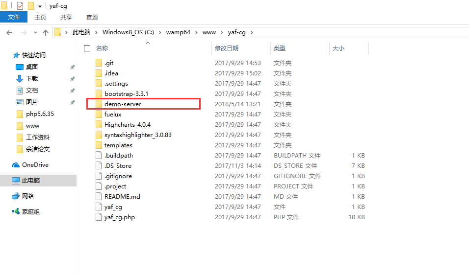
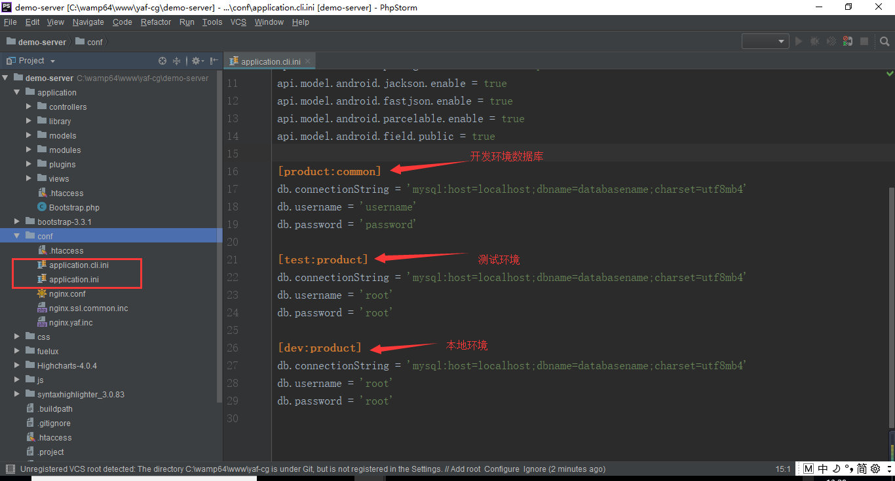
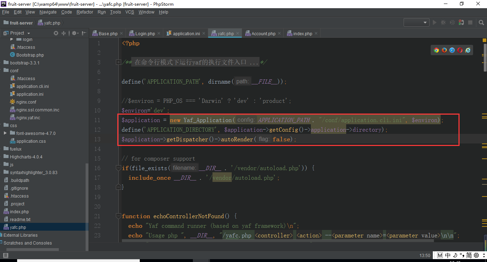
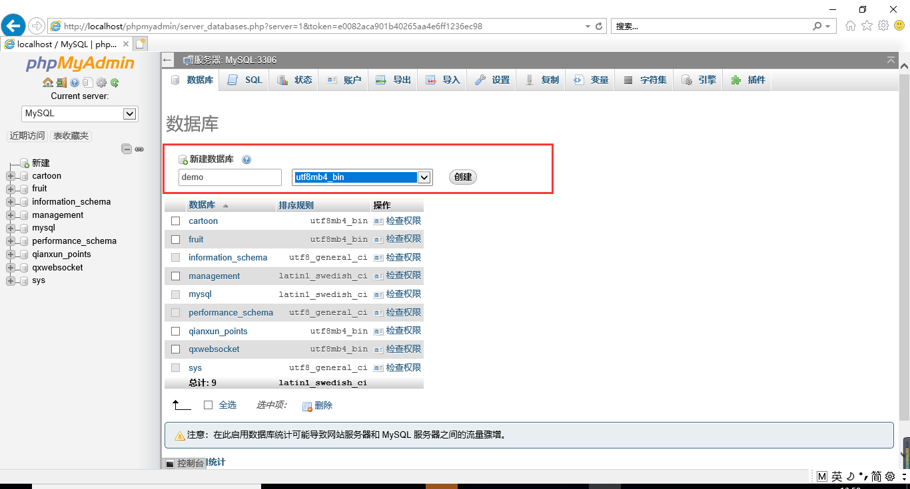
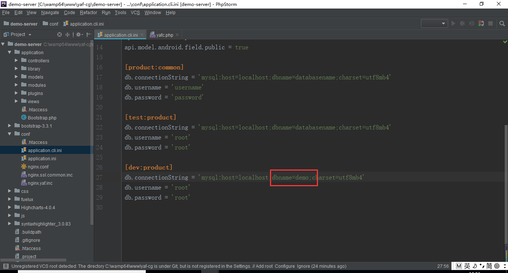
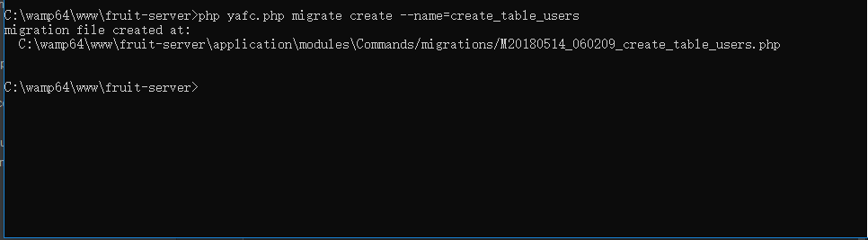
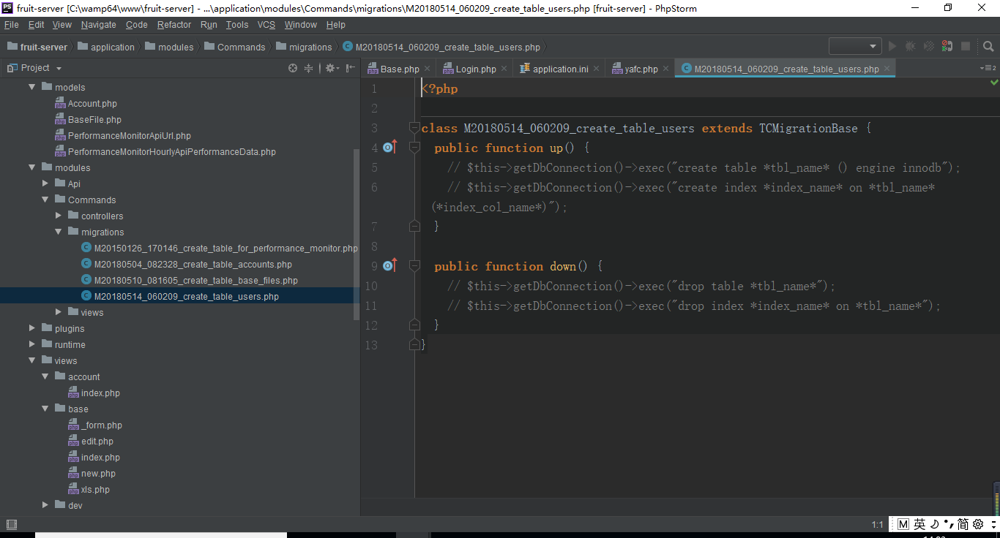
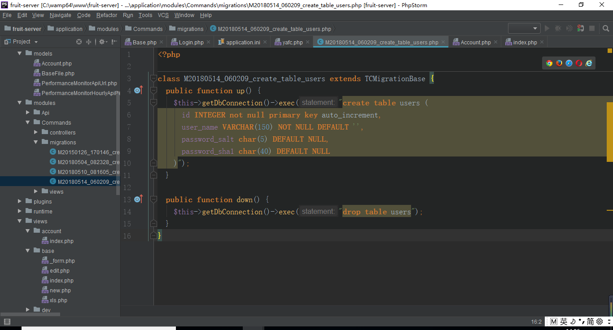
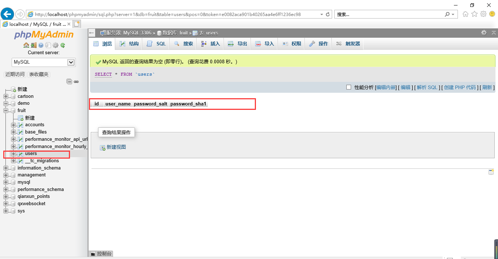
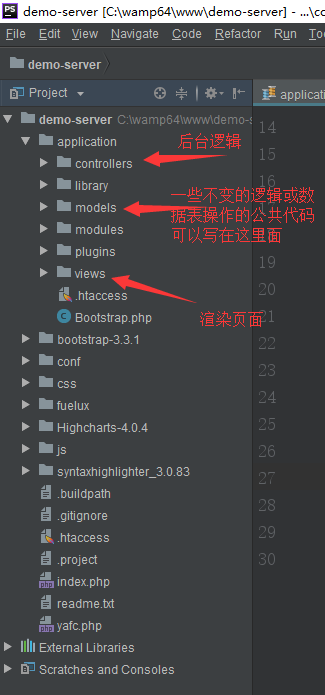

<!DOCTYPE html>
<html>
<head><meta name="generator" content="Hexo 3.8.0">
    <meta charset="UTF-8">
    <meta name="viewport" content="width=device-width, initial-scale=1, maximum-scale=1">
    <meta name="author" content="jishuiyuren">
    
    
    
    
    
    
    <title>使用yaf-cg新建一个项目 | 吉水于人随笔</title>
    <!-- inject:style -->
    <link href="/css/style.css" rel="stylesheet" type="text/css">
    <!-- endinject -->
    <style>
        .cube-loading {
            top: 0;
            position: fixed;
            width: 100%;
            height: 100%;
            background: url('/images/lg/loading.gif') no-repeat center center;
            background-color: rgba(0,0,0,.7);
        }

        .cube-loading.out {
            display: none;
        }

        .cube-loading:before {
            display: block;
            content: 'Loading';
            position: relative;
            width: 100%;
            top: 50%;
            right: -50%;
            color: #fff;
        }

        @media(max-width: 768px) {
            .cube-loading:before {
                font-size: 1.2em;
                transform: translate(-24px,20px);
                -webkit-transform: translate(-24px,20px);
                -o-transform: translate(-24px,20px);
                -ms-transform: translate(-24px,20px);
            }
        }

        @media(min-width: 768px) {
            .cube-loading:before {

            }
        }
    </style>
    
</head></html>
<body>
<div class="cube-body">
    <nav id="cube-top-memu" class="cube-menu">
    <ul class="cube-menu-collapse">
        
        <li>
            <i class="cube-icon cube-icon-home" aria-hidden="true"></i>
            <a href="/">主页</a>
        </li>
        
        <li>
            <i class="cube-icon cube-icon-archive" aria-hidden="true"></i>
            <a href="/archives">归档</a>
        </li>
        
    </ul>
</nav>
<nav class="cube-side-menu" id="cube-side-menu">
    <ul class="cube-menu-list">
        
        <li>
            <a class="lrc-control">Open Lyrics</a>
        </li>
        
        <li>
            <a class="scroll-to-top">Top</a>
        </li>
    </ul>
</nav>
    <header class="cube-header" id="cube-header">
    
    
    <div class="cube-type">
        <span class="cube-typed-title">吉水于人的笔记</span>
        <span class="cube-typed-cursor">|</span>
    </div>
    
</header>

    <style>
        nav.cube-menu:before {
            content: '';
            visibility: hidden;
            position: absolute;
            left: 0;
            top: 0;
            width: 100%;
            height: 44px;
        
            filter: blur(5px);
            -webkit-filter: blur(5px);
        
            z-index: -1;
            background-image: url('/images/bg.jpg');
            background-repeat: no-repeat;
            background-position: center 44px;
            background-size: cover;
            background-color: transparent;
        }

        header.cube-background.cube-header-background {
            visibility: hidden;
            background-image: url('/images/bg.jpg');
            background-position: center 0;
        }
    </style>
    <header class="cube-background cube-header-background">
        
        <div class="cube-type">
            <span class="cube-typed-title">吉水于人的笔记</span>
            <span class="cube-typed-cursor">|</span>
        </div>
        
    </header>
    <div class="load-header-background"></div>
    <script>
        (function (window) {

            window.headerModule = {}
            window.headerModule.image = {
                width: '2000',
                height: '1414'
            }

        })(window)
    </script>
    
    <div class="cube-content">
        <div class="cube-left">
            <div class="cube-article">
    <h1 class="title">使用yaf-cg新建一个项目</h1>
    
    <div class="cube-article-header">
        <div class="cube-article-date">
            <i class="cube-icon cube-icon-date" aria-hidden="true"></i>
            <!-- moment.js对象 -->
            2019-04-19
        </div>
        <div class="cube-article-tags">
    <i class="cube-icon cube-icon-tag" aria-hidden="true"></i>
    
</div>
    </div>
    
    <div class="cube-article-content cube-markdown">
        
        <h2 id="前言"><a href="#前言" class="headerlink" title="前言"></a>前言</h2><p>我这边用yaf框架进行开发，对于第一次使用该框架新建项目的童鞋会有些迷茫，所以这次总结一下，也因为自己很久没有php语言了，其实也有一些忘了，这次趁有一个简单的系统的需求，我想还是用php来写，所以重新温故一下。</p>
<a id="more"></a>
<h3 id="步骤"><a href="#步骤" class="headerlink" title="步骤"></a>步骤</h3><h4 id="1-使用yaf-cg新建一个项目"><a href="#1-使用yaf-cg新建一个项目" class="headerlink" title="1.    使用yaf-cg新建一个项目"></a>1.    使用yaf-cg新建一个项目</h4><p>在搭建好的网页开发环境下，利用yaf-cg这个包新建项目，命令为php yaf_cg加你想要建的项目名称（图1），当显示为DONE时，则新建成功。在yaf-cg的文件下出现该项目，如图2，将该项目拷出来，放在windows下是wamp环境下www的路径下，mac是lamp的htdocs路径下，就可以进行开发了。</p>
<ul>
<li><p>图1<br></p>
</li>
<li><p>图2<br>​​​​</p>
</li>
</ul>
<h4 id="2-配置数据库"><a href="#2-配置数据库" class="headerlink" title="2.    配置数据库"></a>2.    配置数据库</h4><p>数据库的配置有两个文件，这两个文件内的数据库都需要配置好数据库的用户名和密码（图3），框架内已经写好了连接数据库的逻辑，他会直接从这个文件中读取，实现数据库的连接。<br>​​​​* 图3<br></p>
<p>yaf在实例化应用的传递该配置文件路径和运行环境。<br>​​​​* 图4<br></p>
<h4 id="3-建数据库"><a href="#3-建数据库" class="headerlink" title="3.    建数据库"></a>3.    建数据库</h4><p>先新建一个本项目使用的数据库，记得要修改application.cli.ini和application. ini里的数据库名称（图5，图6），为保证线上不手动建表，我们采用命令建表。（注：这部分演示我用自己在做的一个项目进行展示）（图7）。<br>​​​​</p>
<ul>
<li><p>图5<br></p>
</li>
<li><p>图6<br>​​​​</p>
</li>
<li><p>图7<br>​​​​</p>
</li>
</ul>
<p>在migrations下就出现刚刚新建的文件（图8），在这个文件内写操作表的sql语句（图9）。完成后跑一下migrate命令，命令会根据migrations文件从下到上的顺序依次执行文件内的sql语句，完成表新建/更新/删除等操作（图10）。<br>​​​​</p>
<ul>
<li>图8<br></li>
<li>图9<br>​​​​</li>
<li>图10<br>​​​​</li>
<li>图11<br>​​​​</li>
</ul>
<ol start="4">
<li>MVC架构<br>MVC中整个项目前后端实现过程如图12，yaf提供$this-&gt;getView()-&gt;assign(“models”,$models)将后台变量传给view中对应名称的页面。<br>​​​​</li>
</ol>
<ul>
<li>图12<br></li>
</ul>

    </div>
</div>

<div class="cube-article-nav">
    <ul>
        
        
        <li class="next">
            <a href="/2019/04/14/article17/">
                vue内部运行机制源码分析——模版编译
                <i class="cube-icon cube-next" aria-hidden="true"></i>
            </a>
        </li>
        
    </ul>
</div>


<!-- TODO 根据theme.comment的内容进行入口选择 -->


        </div>
        <div class="cube-right">
            
<div class="cube-author cube-sidebar" id="cube-author">
    
    
    <span>jishuiyuren</span>
    
    
    <div class="count">
        <a class="count articles"><span>18</span>Article</a>
        <a class="count tags"><span>3</span>Tags</a>
        <a class="count categories"><span>0</span>Categories</a>
    </div>
</div>


<div class="cube-recent-posts cube-sidebar" id="cube-recent-posts">
    <div class="title">
        <a>Recent Posts</a>
    </div>
    <ul class="list">
        
        
        <li>
            <!-- TODO 如果文章要显示图片，那么在front-matter上添加preview属性(url or path) -->
            
            <div class="normal">
                <p class="index first">
                    <span>1</span>
                </p>
                <p class="title">
                    <a href="/2019/04/19/article18/" title="使用yaf-cg新建一个项目">使用yaf-cg新建一个项目</a>
                </p>
            </div>
            
        </li>
        
        
        
        <li>
            <div class="normal">
                <p class="index">
                    <span>2</span>
                </p>
                <p class="title">
                    <a href="/2019/04/14/article17/" title="vue内部运行机制源码分析——模版编译">vue内部运行机制源码分析——模版编译</a>
                </p>
            </div>
        </li>
        
        
        
        <li>
            <div class="normal">
                <p class="index">
                    <span>3</span>
                </p>
                <p class="title">
                    <a href="/2019/04/13/article16/" title="vue内部运行机制源码分析——初始化和挂载">vue内部运行机制源码分析——初始化和挂载</a>
                </p>
            </div>
        </li>
        
        
        
        <li>
            <div class="normal">
                <p class="index">
                    <span>4</span>
                </p>
                <p class="title">
                    <a href="/2019/04/09/article/" title="地图出图/打印">地图出图/打印</a>
                </p>
            </div>
        </li>
        
        
        
        <li>
            <div class="normal">
                <p class="index">
                    <span>5</span>
                </p>
                <p class="title">
                    <a href="/2019/04/02/article15/" title="视频播放进度记录">视频播放进度记录</a>
                </p>
            </div>
        </li>
        
        
    </ul>
</div>


<div class="cube-links cube-sidebar" id="cube-links">
    <div class="title">
        <a>Links</a>
    </div>
    <ul class="list">
        
        <li>
            
            
            
            
            <a href="https://github.com/jishuiyuren" target="_blank">吉水于人的GitHub</a>
        </li>
        
    </ul>
</div>


        </div>
    </div>
</div>
<footer class="cube-footer">
    
© 2017 jishuiyuren

<br>
Powered by <a href="https://hexo.io/" target="_blank">Hexo</a>.&nbsp;Theme by <a href="https://github.com/ZEROKISEKI" target="_blank">AONOSORA</a>
</footer>
<!-- inject:script -->
<script src="/js/script.js"></script>
<!-- endinject -->
<div class="cube-loading out"></div>
</body>
</html>